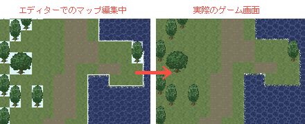
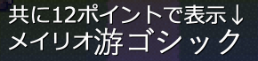
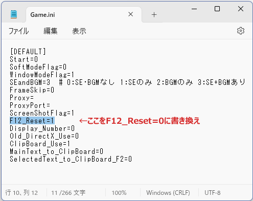

【よくある質問】
ここでは、初めてWOLF RPGエディター（ウディタ）を扱う人が陥りやすい状況や疑問への回答を記載しています。
<一覧> （クリックするとその回答へ飛びます）
【1】キャラクターが半分しか表示されません
【2】ゲーム基本設定で「初期主人公画像」を設定しているのに反映されません。 [※基本システム使用時]
【3】顔グラフィックの表示ってどうやるんですか？
【4】サンプルゲームで話せないイベントがいます
【5】イベントに複数のページを設定したんですが、最後のページしか実行されません
【6】（ゲーム開始直後に）表示した文章の位置がずれます
【7】コモンイベントがコピーできないのが面倒くさいです
【8】一度発生したイベントを消去したいんですが
【9】マップを編集しているとき、透過色の部分が変な色になります
【10】可変DBはおかしくないのに、「存在しない内容番号を読みに行っています」または
「文字列を格納すべき場所に変数を格納しようとしました」というエラーが出たり、
変更したはずのデータが反映されていないことがあります
【11】「スクロールにリンク」した遠景を使用中、ループをまたぐと遠景がずれます。
【12】イベントが起動しません。
【13】文字列操作の【↓のフォルダのファイルリスト取得】を暗号化フォルダに使うと<<ERROR>>が返る。
【14】動作指定を行うと、最初の一個目の動作が何度も実行されます / または一つ目の動作が2回以上行われます。
【15】PrintScreenを押すとWindowsのスクリーンショット機能も起動してしまいます、どうすればいい？
【16】DBのタイプ数って100個までしかないんですか？ これ以上増やせないんでしょうか。
【17】同じサイズを指定してもフォントによって文字の大きさが違うことがあります。
【18】プレイヤーがF12をうっかり押してリセットするのが困るのでF12キーを無効にしたい。
ここにない内容は、Wikiの質問スレまとめ（要ネット接続）へどうぞ。
|
【1】 キャラクターが半分しか表示されないんですが……。 |
| エディターの上部メニューにある「特殊設定」→「ゲーム基本設定」の 「キャラクター画像方向のタイプ」を「4方向」に変えてくださると改善されると思います。 初期状態では「8方向」用画像を使用するようにセットされているので、 そのままRPGツクール規格の素材を使ったり、ウディタ講座のデータを導入すると、 キャラが左か右半分しか表示されなくなるのです。 |
| 【2】「ゲーム基本設定」で「初期主人公画像」を設定しているはずなのに、反映されません。 [※基本システム使用時] |
| 基本システムを使用すると、「ゲーム基本設定」の「初期主人公画像」を設定しても、 反映されません。これは、基本システムのゲーム開始直後に、 「キャラグラフィックを、可変DB タイプ6に設定された初期パーティーに自動的に変更する」 という処理を行っているため、「初期主人公画像」ではなく、この「初期パーティー」の グラフィックになっているからです。 やりたいことに応じて、それぞれ以下の方法で設定してください。 『開始時の主人公を、指定のグラフィックで表示したい』 1．可変DB タイプ0「主人公ステータス」の好きなデータ番号に、登場させたいキャラを作ります。 設定項目の中の「歩行グラフィック画像」が、歩行グラフィックです。 2．可変DBのタイプ6「パーティー情報」データ0番の「メンバー1」（2や3でもいいですが）に、 上記 1 で設定したキャラクターを登録します。 3．ゲームを開始してください。基本システムが動作していれば、 キャラクターグラフィックが反映されているはずです。 『開始時の主人公を透明にしたい』 もし主人公たちを透明にしたいだけなら、ゲーム開始直後に（自動実行イベントなどで） イベントコマンド『パーティ画像』の特殊処理「パーティ全員を透明にする」を行い パーティーを透明にしてしまうのが簡単です。 |
| 【3】顔グラフィックの表示ってどうやるんですか？ |
| 基本システムVer1.26以降では顔グラフィック表示システムが組み込まれています。 使い方は以下の通り。 1.システムデータベース の タイプ24：顔グラフィック名を開き、データ2番目以降に 「顔画像ファイル」に表示したい顔グラフィックを指定する。 2.「文章の表示」で1行目に「@2」という具合に半角@マークの後に 表示させたい顔グラフィック番号を書き込む。 ※顔グラフィック番号0番はメッセージウィンドウを表示せずに文章を表示し、 1番はメッセージウィンドウのみ表示して文章を表示します。 実例： 顔グラフィック2番を表示させたいときの「文章の表示」指定方法 @2 はじめまして、私はウルファールです。 |
| 【4】サンプルゲームで話せないイベントがいます |
| 「ゲーム基本設定」の「デフォルトのキャラクター移動幅」を、 「0.5マス」から「1.0マス」に変更していませんか？ 1.0マス移動にすると、話せないイベントキャラが出てくる可能性が ありますので、その場合は移動幅を「0.5マス」に変更してみてください。 |
| 【5】イベントに複数のページを設定したんですが、最後のページしか実行されません |
| マップのイベントは、番号の大きいページを優先して実行しようとします。 そのため、最後のページの起動条件が満たされてしまうと、 小さい番号のページは実行されません。 |
| 【6】（ゲーム開始直後に）表示した文章の位置がずれます |
| その直前に1フレーム以上のウェイトを入れてみてください、おそらく それだけで解決されると思います。 文字の表示位置は、並列コモンイベント63番X「[共]メッセージウィンドウ」の 1フレーム目で行われるので、開始直後に表示された文章は ウィンドウと場所が合わなくなるのです。 |
| 【7】コモンイベントがコピーできないのが面倒くさいです |
| コモンイベントは、左のコモン一覧を選択した状態で「C」キーを押すとコピー、 「X」キーで切り取り、「V」キーで貼り付けを行うことができます。 コモンイベントに限らず、C、X、Vキーでコピー、切り取り、貼り付け処理が可能です。 |
| 【8】一度発生したイベントを消去したいんですが |
| イベントコマンド「イベント制御」の「イベントの消去」を行うとイベント消去が可能です。 変数を利用して「一度しか起きないイベント」を作る方法もあります。 ＜ウディタパーフェクトガイド＞ 一度開いたら空きっぱなしの宝箱の作り方 http://www.silversecond.com/WolfRPGEditor/Guide/EV_006.html |
| 【9】マップを編集しているとき、透過色の部分が変な色になります |
| エディタの描画機能の仕様上、透過色が黒以外だと その部分が半透明のフィルムを貼ったような表示になってしまいます。 実際のゲーム内では正常に表示されますのでご安心下さい。  |
| 【10】 可変DBはおかしくないのに、「存在しない内容番号を読みに行っています」または 「文字列を格納すべき場所に変数を格納しようとしました」というエラーが出たり 変更したはずのデータが反映されていないときがあります |
| ニューゲームでプレイしてみてください、それで解消される場合があります。 セーブデータには「ゲーム開始時点の可変DBのタイプ・データ情報」が 含まれているため、エディターで可変DBのタイプ設定やデータを変更した後に 「ロード」してゲームを続けると、変更前のDBを読みにいくために項目数が エディター側より少ないままだったり、データが古かったりする場合があるのです。 なお、ユーザDBやシステムDBの反映はセーブデータに依存しないので、 このような問題が起きることはありません。 |
| 【11】 「スクロールにリンク」した遠景を使用中、ループをまたぐと遠景がずれます。 |
| 正しい仕様です。この現象への対処としては、320x240サイズの遠景なら、 マップの横サイズを20の倍数、縦を15の倍数に設定すれば問題なく表示されます。 「『スクロールにリンク』した『動かない遠景』が設定されているとき、 主人公が0,0の座標にいれば常に同じ画像が表示される」 というのが正しい仕様なので、マップサイズ（ピクセル単位）が 遠景画像の縦横で割り切れるサイズでない場合は、 ループをまたいだときにカクッとずれるように見えるのです。 |
| 【12】 イベントが起動しません。 |
まずイベントの「半歩上に設置」がオンになっていないかご確認下さい。 もしオンでしたら、オフにしてみてください。 「ゲーム基本設定」で「デフォルトのキャラ移動幅」が「1x1」に設定されていると、 半歩上に設置したイベントが起動できない仕様になっています。 → Ver3になって、「デフォルトのキャラ移動幅」 半歩遠くてもイベント起動できるように修正されたので、この問題はなくなりました。 そうでない場合は、どの起動条件でも、変数の条件を満たしていないか、 ページの順番を間違えている可能性が高いでしょう。 起動は、大きいページが優先されます。ページ1とページ3の起動条件がどちらも 満たされていた場合、実行されるのはページ3の方です。 |
| 【13】 文字列操作の【↓のフォルダのファイルリスト取得】を暗号化フォルダに使うと<<ERROR>>が返る。 |
| こちらは仕様となっております（暗号化フォルダの中身を全部見てしまえるようになるため）。 |
| 【14】 動作指定を行うと、最初の一個目の動作が何度も実行されます / または一つ目の動作が2回以上行われます。 |
| 自動イベントや並列イベントなどで動作指定をしている場合は、 「ウェイト」や「動作完了までウェイト」を正しく入れているかご確認ください。 一つ目の動作が終わる前にまた同じ『動作指定』が実行されると、 再び最初から動作しようとします。そのため、自動イベントや並列イベントで 何度も『動作指定』を呼び出しなおす場合などにおいては、組み方によっては 延々と一つ目の動作しか行わなくなってしまう場合があります。 他にも、常に並列実行イベントの動作指定で「移動速度を変更」だけを 実行し続けているなどのケースも、他の場所で動作指定をしても 最初の一歩目しか実行されないことになります。 【対策】 まずは1歩しか動かない『動作指定』の次に「動作完了までウェイト」を入れて 問題が解決できるかチェックしてください。 それでもダメそうなら、メイン実行イベント中だけ並列イベント内の動作指定を止める対処を 行ってみてください。並列実行イベント中の「動作指定」を探し、システム変数の 「Sys13：ｲﾍﾞﾝﾄ実行中？(1=ON)」が0のときだけ動作指定を実行するように 修正します。 |
| 【15】PrintScreenを押すとWindowsのスクリーンショット機能(Windows11)も 起動してしまいます、どうすればいい？ |
| 根本的な対処にはならないのですが、ウディタ側でPrintScreenキーを封印して、 スクリーンショット撮影にはScrollLockやPauseキーを使うようプレイヤーにすすめるのがおすすめです。 キーの封印は以下のように行います。 1. ゲームが始まるタイミングで実行されるイベントを探します。 （サンプルゲームならマップ0にある「タイトル用イベント」） 2．そのイベントの先頭に、「キー入力」コマンド内にある 「キー入力の許可/禁止」で、「入力デバイス」を「キーボード」に切り替え、 キーの「283（PrintScren）」を「禁止する」にして「入力」を押します。 これでPrintScrenキーが禁止されます。 3．そうしておけばゲーム起動後、PrintScreenを押しても ウディタ側のスクリーンショットは起動しなくなります。 あなたはマニュアルやゲーム内で、スクリーンショット撮影をする場合は ScrollLock や Pause キーを使うよう、プレイヤーにうながしてください。 |
| 【16】DBのタイプ数って100個までしかないんですか？ これ以上増やせないんでしょうか |
| はい、自由に使える8桁の値の配分を考えた結果、タイプは100個に設計されています。 ウディタ内の全ての変数は「100万以上」の値でアクセスされるようにしているのですが、 たとえば可変DBへのアクセス値は1100000000 (11AABBBBCC、11億〜)から始まり タイプはAA(2桁）、データはBBBB(4桁)、項目はCC(2桁)で指定するよう設計されています。 そしてウディタ内で扱えるint型の数値は限界値が「約21億」で、これ以上は桁を増やせないので、 この、タイプ2桁=0〜99まで、データ4桁=0〜9999まで、項目2桁=0〜99まで、 という配分で桁がすでにいっぱいいっぱいになっているのです。 よって、これ以上のタイプ数の拡張は今のところ難しい状況です。うまくやりくりしてみてください。 |
| 【17】同じサイズを指定してもフォントによって文字の大きさ(高さ)が違うことがあります。 |
| この文字の大きさの差が出るのは、使用しているライブラリの影響のようです。 （ウディタ内部では、\fなどでたとえばサイズ16ポイントが指定されたら、 ライブラリのコマンドにも単純に16ポイントで文字表示するよう指示していますが、 フォントに応じた何らかの特性の差で見た目の大きさが変わるようです） 今のところ見た目の大きさを一律で自動調整する機能はないので、フォント特性に合わせて 手動で\fの特殊文字などを使ってサイズを調整してみてください。 例：同じフォントサイズ指定でもメイリオより游ゴシックの方が大きく表示されます。  |
| 【18】プレイヤーがF12をうっかり押してリセットするのが困るのでF12キーを無効にしたい。 |
| 以下の方法で、F12キーのリセット機能を無効にすることができます。 【無料版ウディタの場合】 ゲームデータに同梱されている「Game.ini」をWindowsの「メモ帳」アプリなどで開き、 その中の「F12_Reset=1」の行を「F12_Reset=0」に書き換えて保存すると、 次にゲームを起動した際、F12リセット機能をオフにすることができます。 （Game.iniがなければ一度Game.exeを起動してすぐ終了してください、 Game.exe実行中にGame.iniを書き換えてもゲーム終了時にiniが起動前の内容に戻ってしまいます） ※なお、完成品の「ゲームデータを出力」した時点ではフォルダ内にGame.iniは作られていないので、 一度Game.exeを起動、終了してGame.iniを作った後にこの手順を行うか、 元のGame.iniをコピーする必要があります。  さらに工夫したい人は、上記手順でF12を無効にした後、 ゲーム内でF12が押されたときの処理を「並列実行」のコモンイベントとして自作して、 「F12を長押しするとリセットする」 「F12を二度押しするとリセットする」 といった具合に、独自のリセット機能を実装している方もおられます。 （リセット処理自体は「イベント制御」の「タイトル画面へ」コマンドで実現できます） 実装できる方は、いろいろ工夫してみてください。 【プロ版ウディタの場合】 ウディタのプロ版では「ゲームの基本設定Pro」内からF12機能をオフにすることができます。 |